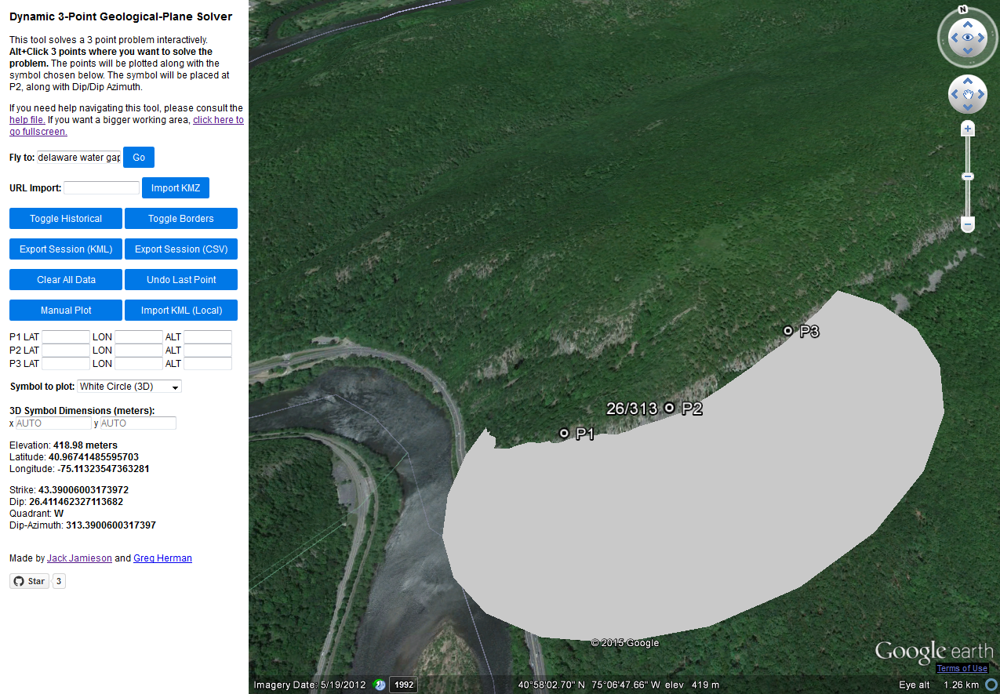
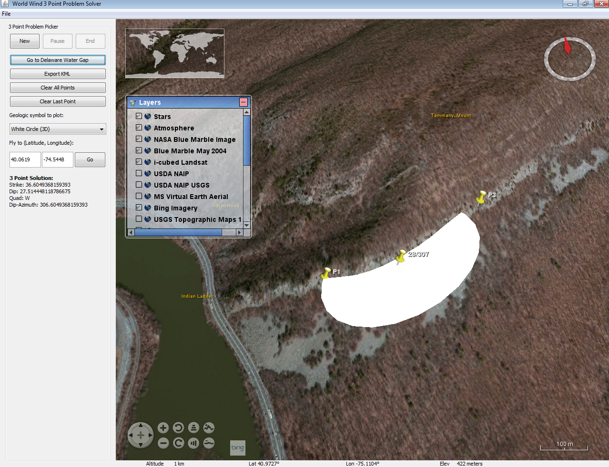

Dynamic 3-Point Geological-Plane Solver
The plane solver is an interactive tool that solves a 3 point problem and plots geological symbols in proper dip/dip-azimuth form.
Google Earth 3-Point Problem Solver
Uses the web based Google Earth plugin to solve the 3-point problem. Supports importing, exporting, manual plotting, multiple symbols, and more.
Unfortunately support for the GE web plugin will be dissolved on December 12th, 2015. At that time, the tool will no longer work.

NASA World Wind 3-Point Problem Solver
This is a desktop based version of the 3-point problem solver. It requires Java and is based off of NASA's Globe Viewer SDK called World Wind. It
functions similar to the web based version but may look slightly different. Not all features are included in this version but it is able to import local
files much easier. It should be around longer than the Google Earth version.
